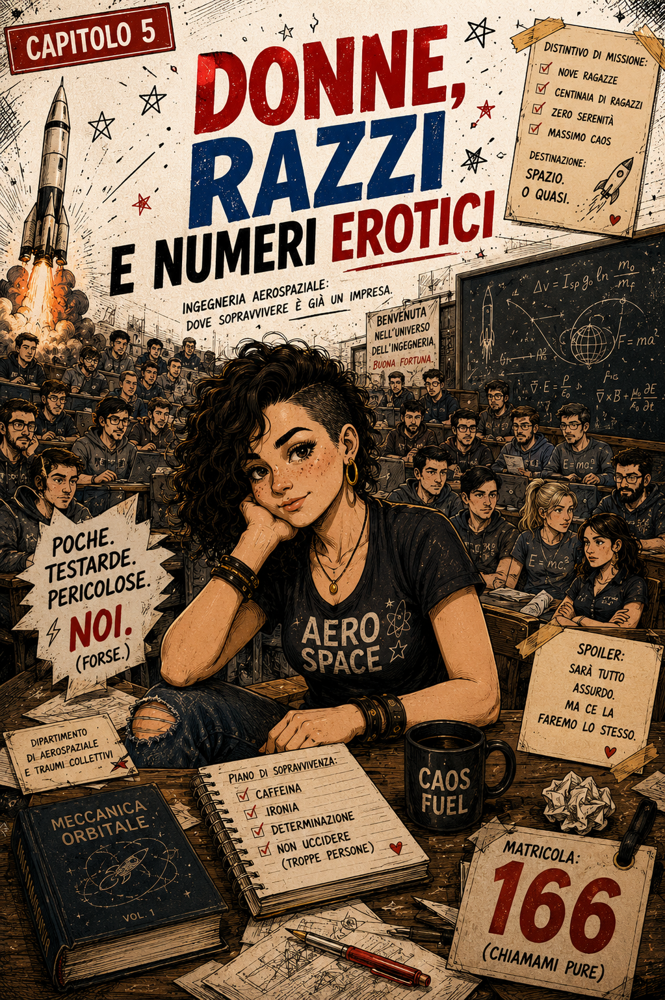
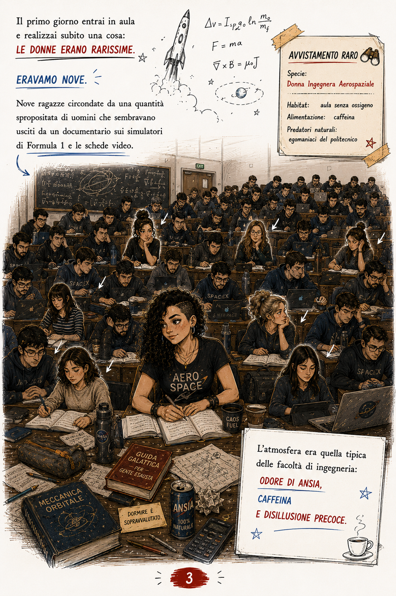
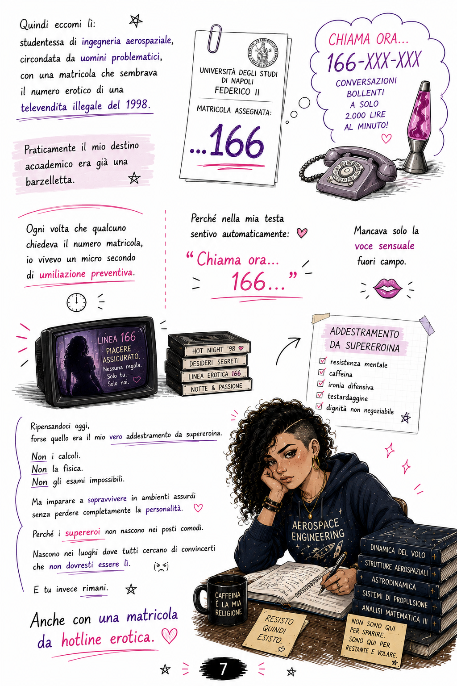

Ipotesi di Bob
Bob ritiene la matricola 166 un elemento narrativamente troppo perfetto per essere ignorato.

Nove ragazze in mezzo a un esercito di uomini, una risposta memorabile e una matricola che sembra uscita da una hotline anni '90. Bob cataloga il materiale come improbabile ma documentato.
Solo alcuni frammenti della graphic novel: abbastanza per capire il tono, non abbastanza per raccontare tutto.


Bob ritiene la matricola 166 un elemento narrativamente troppo perfetto per essere ignorato.
Variabile. Bob considera “prova” qualunque dettaglio che renda la teoria più interessante.
SOPRAVVISSUTA. RAZZI INTEGRI. DIGNITÀ ACCADEMICA PARZIALMENTE RECUPERATA.